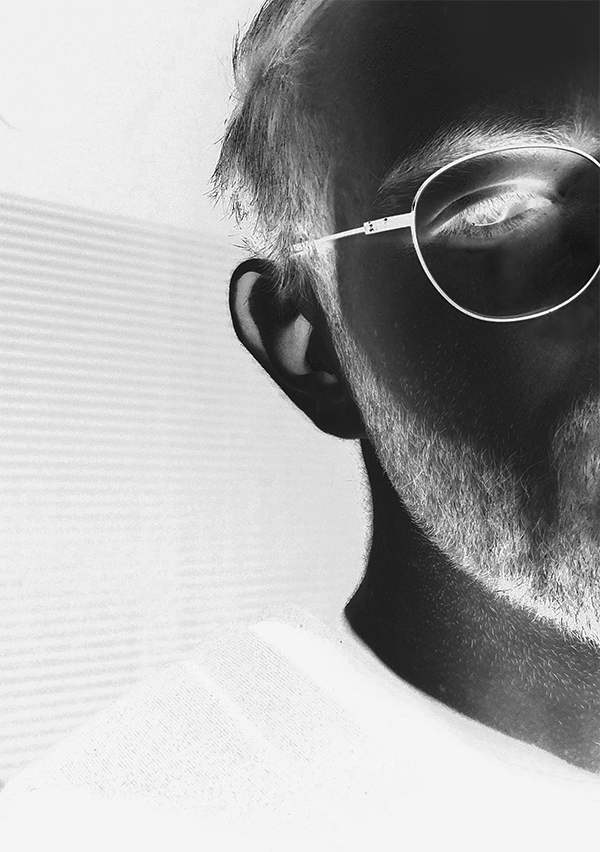

BIO
Kniss is an electronic music producer crafting laid-back grooves that blend beat-driven rhythms, global influences, and the warm textures of everyday moments. Working multiple years in the field with a focus on mood and movement, he creates soundscapes that feel organic and natural. Sounds for late nights, slow mornings, and everything in between.
I've always loved the concept of minimalism and having a carefully selected combination of sounds that comliment each other. Also contrasts in music production elements have captivating effects.
- Music Production
- Mixing & Mastering
- Sound Design
